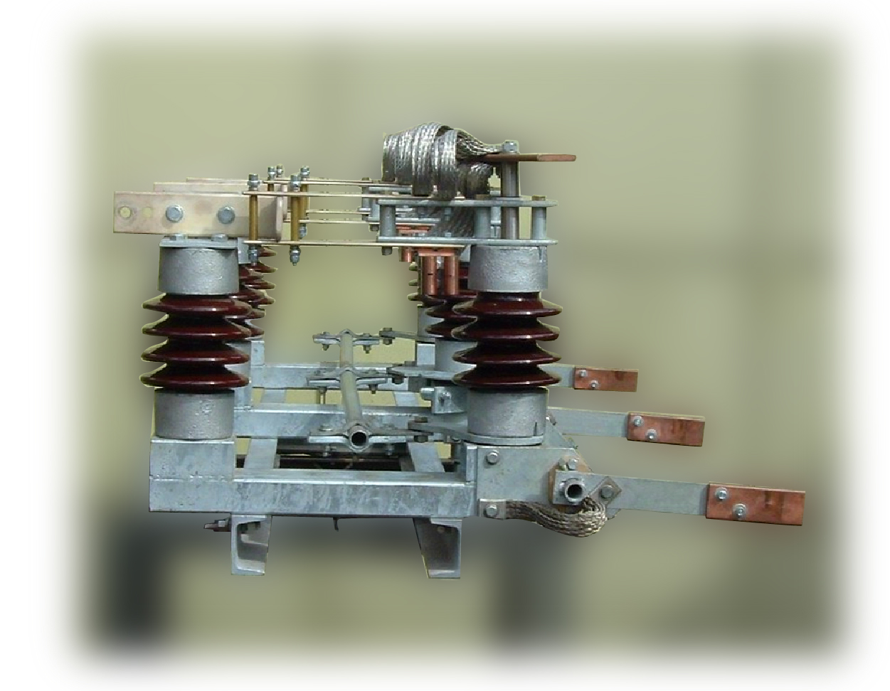
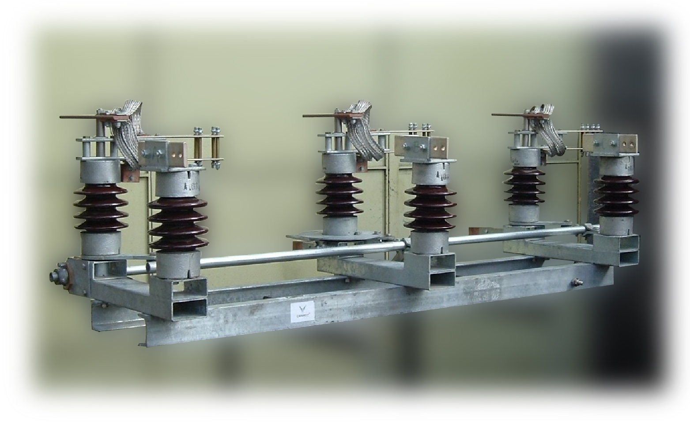

SECCIONADORES TRIPOLARES DE MEDIA TENSION PARA EXTERIOR
Características Técnicas Principales:
- Los Seccionadores Tripolares a Cuernos Cemec®, para uso exterior, son fabricados bajo Normas IEC vigentes para tensiones nominales de 13,2 y 33 kV, con comando manual a palanca con bloqueo por candado y la posibilidad de ser motorizados.
- Los del tipo SEACTH son de montaje horizontal y los del tipo SERTV son para montaje vertical.
- Ambos tipos responden a la normalización MN-252, MN-254 y AYEE, manteniendo las distancias eléctricas y de anclaje.
- El bastidor está conformado por perfiles U soldados eléctricamente.
- Los aisladores soporte son, optativamente, del tipo antivandálico de resina cicloalifática para exterior, cilíndricos aletados de porcelana color gris nube o del tipo MN-5 y MN-6 de porcelana color marrón, según elección del cliente.
- Tanto el bastidor, como los restantes componentes ferrosos, están galvanizados por inmersión en caliente.
- Todas las partes conductivas son construidas en cobre electrolítico estañado o plateado y dimensionadas de manera tal que, ante el pasaje de la corriente máxima nominal, la sobrelevación de la temperatura no supere los 30º C sobre la temperatura ambiente.
- Los seccionadores Cemec® tienen la particularidad de que la presión de los contactos, de diseño propio, se establece mediante resortes de acero inoxidable comprimidos por pasadores ajustables.
- La conexión entre el contacto móvil y el fijo está realizada mediante mallas extraflexibles de cobre estañado, de la sección adecuada a la corriente a conducir, normalmente 400 o 600 A (opcional de 800 A).
- Un sistema de cuernos elásticos de disparo rápido, puestos en paralelo con los contactos principales, permite la interrupción de corrientes de 100 A en carga y de 300 A en red anillada; en un tiempo menor de 30 mseg. y sin manifestación de arco eléctrico.
- El árbol de accionamiento, de sección cuadrada, se apoya sobre seis cojinetes de bronce libres de lubricación.
- El sistema de topes con resortes y fuelles de goma, es regulable y permite limitar tanto el movimiento de apertura como el de cierre, evitando solicitaciones excesivas a los aisladores móviles.
- Se pueden suministrar con cuchillas de puesta a tierra, sincronizadao independiente, normalmente montadas del lado del pantógrafo y accionadas por un eje de sección cuadrada igual al principal.
- Los seccionadores se suministran con el eje principal y el de puesta a tierra con un saliente de 120 mm de ambos lados, a vuestro pedido se pueden proveer con otras longitudes.
- Son accionables con solo 5 Kgm lo cual, por lo dócil y liviano, permite su accionamiento a pértiga; que agrega seguridad.
telecomandos
Antivandálico

Bajo Carga 15 kV / 100 A
SECCIONADORES TRIPOLARES ROTATIVOS 2 COLUMNAS DE MEDIA TENSION
Características Técnicas Principales:
Moderno diseño de seccionador tripolar rotativo, 2 columnas, para montaje horizontal, de uso en el seccionamiento de subestaciones de media tensión reconocido por sus condiciones constructivas y óptimo funcionamiento.
- Bornes de contacto funcionales y sobredimensionados que aseguran un rendimiento constante a través del tiempo.
- Contactos adinámicos con recubrimiento de plata pura y resortes de acero inoxidable que mantienen una correcta presión de contacto.
- Terminales planos para el conexionado de los cables de entrada y salida mediante conectores convencionales.
- Se producen en dos columnas, una rotativa, que provee un contacto apto para el uso en lugares con diferentes condiciones climáticas.
- Los aisladores pueden ser de porcelana normalizados de fabricación nacional, o bien antivandálicos de resina cicloalifática.
- Bastidor de perfiles de acero y tubos estructurales, galvanizado por inmersión en caliente.
- Rangos de fabricación: 400, 630, 800 y 1000 A para 15 y 34,5 kV.
- Comando manual simple.
- Comando manual con enclavamiento, señalización y calefacción.
- Comando eléctrico a distancia.
- Puede ser suministrado con: cuchillas para puesta a tierra sincronizada o bien de accionamiento independiente.
- No contempla perfilería ajena al equipo.

